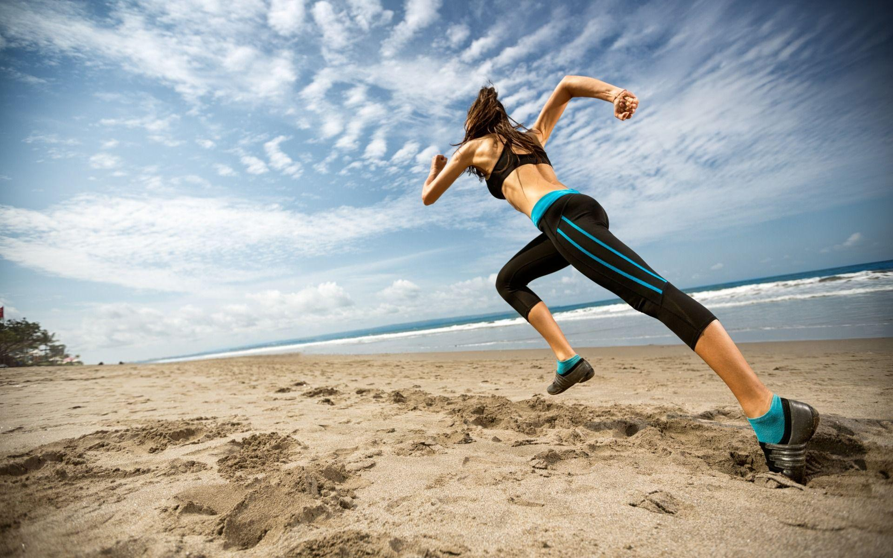

Løpeskader!
Fortfatter heter: Bjørn 27.09.2023
De fem vanligste løpeskadene og hvordan forebygge det!
Løping er en populær treningsform som gir mange helsefordeler, men det kan også føre til skader hvis man ikke tar de nødvendige forholdsreglene. Her er en artikkel om de fem vanligste løpeskadene og hvordan man kan forebygge dem:
Løperkne
Løperkne er en smertefull tilstand som oppstår når kneet blir overbelastet. Det kan føre til smerter på utsiden av kneet og stivhet i kneleddet. For å forebygge løperkne bør du unngå å løpe for mye i nedoverbakker eller på skrå veibane, og heller variere treningsprogrammet ditt med andre typer trening som sykling eller svømming. Du kan også styrke musklene rundt kneet ved å gjøre øvelser som knebøy og utfall.
Beinhinnebetennelse
Beinhinnebetennelse er en betennelse i beinhinnen som omgir leggbeinet. Det kan føre til smerter langs innsiden av leggen og i foten. For å forebygge beinhinnebetennelse bør du unngå å øke treningsmengden for raskt, og heller gradvis øke intensiteten på treningen din over tid. Du kan også gjøre øvelser som styrker musklene rundt leggen, som tåhev og leggpress.
Akillesbetennelse
Akillesbetennelse er en betennelse i akillessenen som kan føre til smerter i hælen og langs baksiden av ankelen. For å forebygge akillesbetennelse bør du unngå å øke treningsmengden for raskt, og heller gradvis øke intensiteten på treningen din over tid. Du kan også gjøre øvelser som styrker musklene rundt ankelen, som tåhev og leggpress.
Plantar fasciitt
Plantar fasciitt er en betennelse i bindevevet under foten som kan føre til smerter i hælen og langs undersiden av foten. For å forebygge plantar fasciitt bør du unngå å løpe på harde underlag som asfalt eller betong, og heller velge mykere underlag som gress eller skogssti. Du kan også gjøre øvelser som styrker musklene rundt foten, som tåhev og leggpress.
Stressfraktur
Stressfraktur er en liten sprekk i beinet som oppstår når beinet blir overbelastet over tid. Det kan føre til smerter langs beinet og hevelse i området rundt frakturen. For å forebygge stressfraktur bør du unngå å øke treningsmengden for raskt, og heller gradvis øke intensiteten på treningen din over tid. Du bør også sørge for å ha riktig fottøy når du løper, og unngå harde underlag.
Husk at det alltid er viktig å lytte til kroppen din når du trener, og ta pauser hvis du kjenner smerte eller ubehag underveis i treningen.